Plateforme de gestion commerciale, logistique et financière Dig’eCom
Grande Comore · Anjouan · Mohéli
Profil couvert : Administrateur général — accès complet à tous les modules.
Captures réalisées sur les données de démonstration. Les montants sont en francs comoriens (KMF).
Dig’eCom importe des produits de Chine et les fait vendre aux Comores par un réseau de leaders, d’e-commerçants, de téléconseillers et de livreurs. Le back-office web centralise toute l’activité : catalogues, stock, commandes, livraisons, finance et rapports.
Les acteurs
Rôle
Où il travaille
Ce qu’il fait
Administrateur général
Web
Voit tout sur les trois îles, gère les comptes, les droits et les paramètres. C’est l’objet de ce guide.
Vérifient et valident les règlements, les dépenses, suivent les marges.
Caissier
Web
Tient la caisse de son site, paie les règlements, encaisse l’argent des livreurs.
Gestionnaire de stock
Web
Entrées, transferts, inventaires, réception des lots.
Assistant logistique
Web
Prépare les commandes de son île et affecte les livreurs.
Leader Senior
Web (+ mobile)
Publie son catalogue ; ses e-commerçants trouvent les clients.
Leader Junior
Web
Publie son catalogue, lance des campagnes publicitaires ; ses téléconseillers appellent les prospects.
Téléconseiller (TCI)
Web
Appelle les prospects et enregistre les commandes ; touche une prime fixe par produit vendu.
E-commerçant
Application mobile
Vend le catalogue de son leader, confirme la réception, déclare si le client a pris.
Livreur
Application mobile
Accepte les courses de son île, retire, livre, encaisse.
Les principes qui guident toute la plateforme
À retenir
Argent en francs comoriens entiers, affiché sous la forme « 12 500 KMF ».
Aucune écriture financière ne se modifie ni ne se supprime : une erreur se corrige par une écriture inverse justifiée.
Instantanés : prix, part vendeur, prime TCI, taxes et coût d’achat sont figés sur la commande au moment où elle est créée. Changer un prix ou un paramètre ne modifie jamais les ventes passées.
Commission définitive seulement quand la vente est livrée, acceptée et encaissée (statut « Vendue »).
Cloisonnement par île pour les rôles de terrain, et par leader pour les équipes commerciales.
Tout est journalisé : qui a fait quoi, quand, avec l’avant et l’après.
2Connexion et sécurité
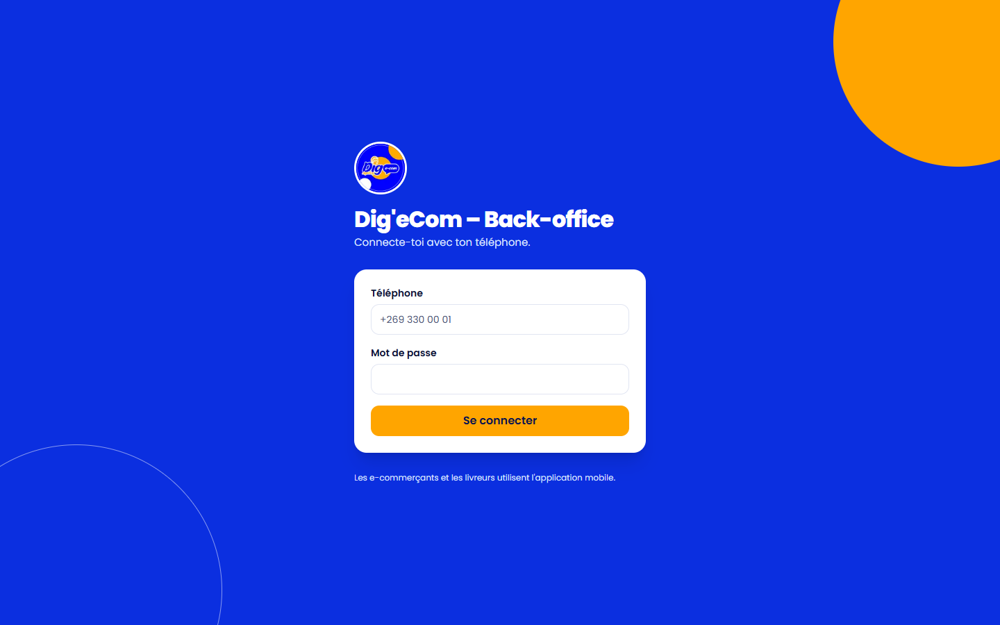
Écran de connexion du back-office.
Ouvre l’adresse du back-office dans un navigateur récent (Chrome, Edge ou Firefox).
Saisis ton téléphone (avec ou sans indicatif +269, espaces acceptés) et ton mot de passe.
Clique sur Se connecter. Tu arrives sur le tableau de bord.
Sécurité de la connexion
Après 5 essais manqués, le compte est verrouillé 15 minutes, même depuis un autre appareil.
Un compte créé par l’administrateur reçoit un mot de passe temporaire : la personne doit le changer à sa première connexion, rien d’autre n’est accessible avant.
La session est conservée de manière sécurisée ; utilise Déconnexion (bas du menu) sur un poste partagé.
Changer son mot de passe ferme toutes ses autres sessions.
3L’interface : menu, île, notifications, appels
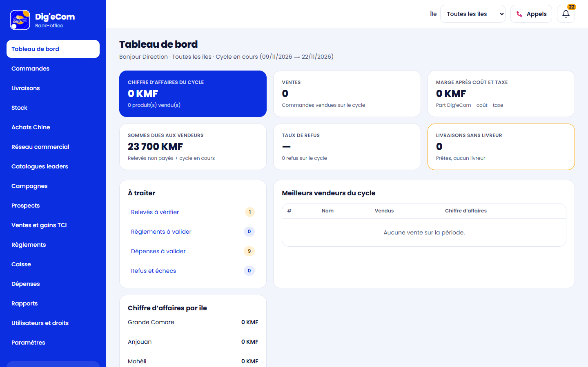
Le cadre commun : menu à gauche, en-tête avec filtre île, appels et notifications.
Le menu
Le menu de gauche liste les seize modules. L’administrateur les voit tous ; les autres rôles ne voient que ceux que leur ouvre la matrice des droits (section 18). Un module invisible est aussi refusé par le serveur : masquer un lien n’est jamais la seule protection.
Le filtre « Île »
En haut à droite, le sélecteur Île restreint tous les écrans à une île (Grande Comore, Anjouan, Mohéli) ou affiche Toutes les îles. Il s’applique aux tableaux de bord, listes et rapports.
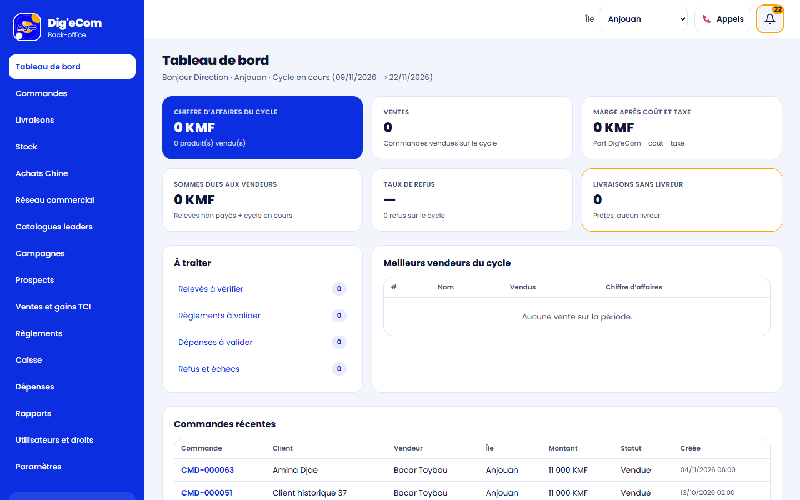
Tableau de bord filtré sur Anjouan.
Les notifications
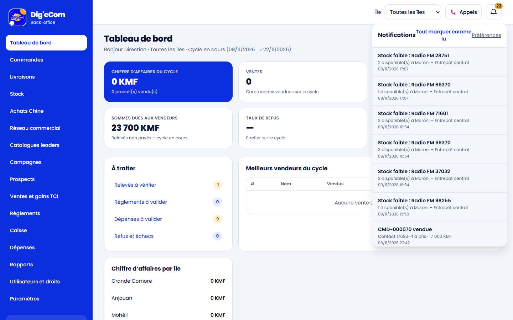
La cloche : dernières notifications.
La cloche affiche le nombre de notifications non lues. Elles arrivent en temps réel (nouvelle commande, stock faible, remise effectuée, vente validée, dépense à valider, export prêt…).
Cliquer une notification ouvre l’objet concerné.
Tout marquer comme lu vide le compteur.
Préférences mène au réglage des canaux (section 20).
Les appels Dig’eCom
Le bouton 📞 Appels ouvre l’annuaire d’appel par Internet (section 21).
4Tableau de bord
La vue « direction » : l’activité du cycle de règlement en cours, ce qui attend une action, et les meilleures performances.
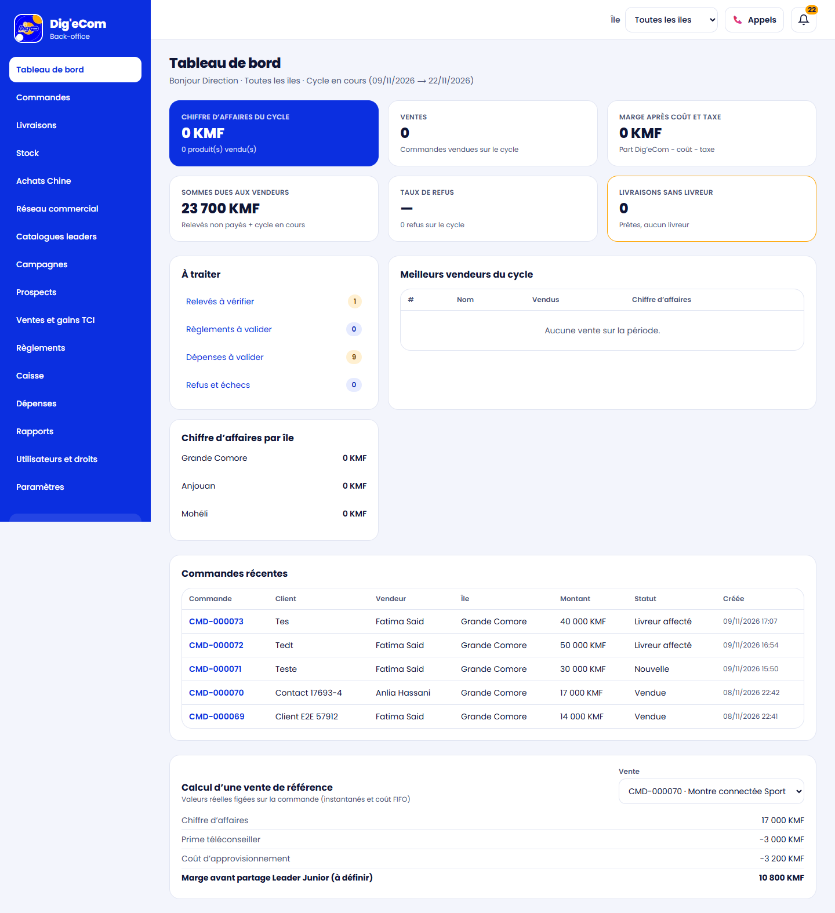
Tableau de bord complet de l’administrateur.
Les indicateurs
Indicateur
Signification
Chiffre d’affaires du cycle
Total des ventes « Vendue » du cycle en cours, et nombre de produits vendus.
Ventes
Nombre de commandes vendues sur le cycle.
Marge après coût et taxe
Part Dig’eCom − coût d’achat réel du lot − taxe Dig’eCom.
Sommes dues aux vendeurs
Relevés non payés + commissions du cycle en cours.
Taux de refus
Part des commandes refusées par les clients sur le cycle.
Livraisons sans livreur
Commandes prêtes qu’aucun livreur n’a encore acceptées.
Les blocs
À traiter : relevés à vérifier, règlements à valider, dépenses à valider, refus et échecs. Chaque ligne est un lien vers la liste filtrée.
Meilleurs vendeurs du cycle et chiffre d’affaires par île.
Commandes récentes : les cinq dernières, cliquables.
Calcul d’une vente de référence : choisis une vente pour voir son calcul exact (prix, part vendeur, coût FIFO, taxes, marge), avec les valeurs figées sur la commande.
AstuceChaque chiffre est un lien vers le rapport ou la liste correspondante. Les données sont mises en cache 60 secondes et rafraîchies à chaque nouvelle écriture.
5Commandes
Toutes les commandes : création, préparation, remise, vente, refus et retours.
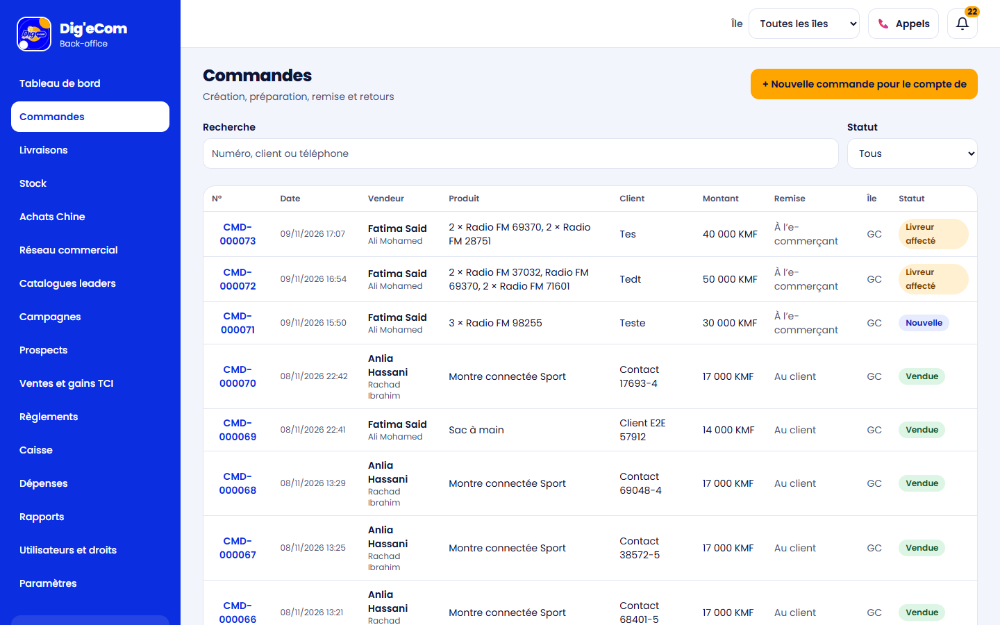
Liste des commandes.
Rechercher et filtrer
Recherche : numéro (CMD-…), nom ou téléphone du client.
Statut : Nouvelle, Confirmée, En préparation, Prête, Livreur affecté, En livraison, Remise effectuée, Vendue, Livraison échouée, Refusée par le client, Retour à contrôler, Remise en stock, Endommagée, Annulée.
Le filtre Île de l’en-tête s’applique aussi.
Les modes de remise
Mode
Déroulement
À l’e-commerçant
Un livreur apporte le produit à l’e-commerçant, qui le remet à son client puis déclare « client a pris » ou « refusé ».
Au client (livraison directe)
Le livreur livre le client, encaisse le montant et ajoute une photo de preuve.
Retrait au site
L’e-commerçant vient chercher le produit au site.
Créer une commande pour le compte d’un vendeur
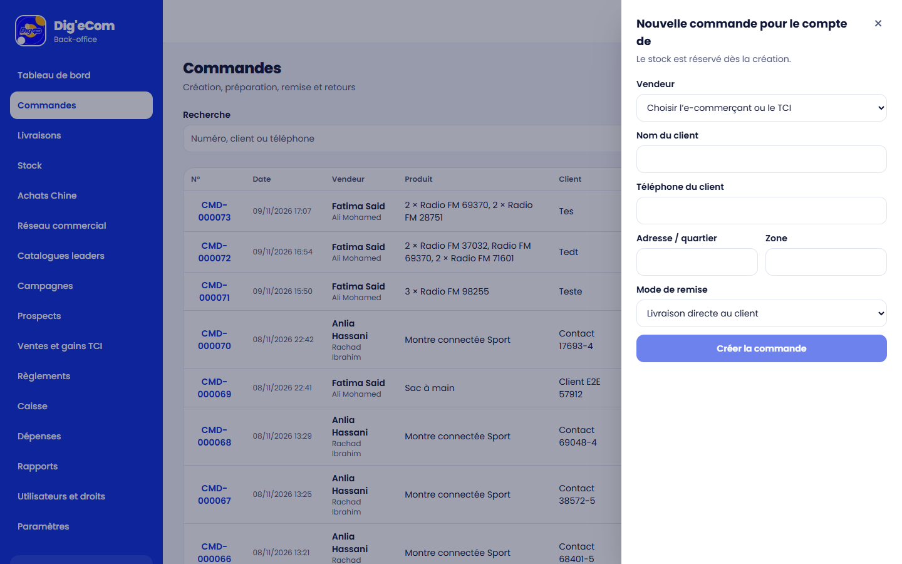
« Nouvelle commande pour le compte de » : vendeur, client, produits, mode.
Clique sur + Nouvelle commande pour le compte de.
Choisis l’e-commerçant ou le TCI : seuls les produits publiés par son leader, avec du stock sur son île, sont proposés.
Renseigne le client (nom, téléphone, adresse ou quartier), les produits (jusqu’à 10, avec quantités) et le mode de remise.
Valide : le stock est réservé immédiatement et les prix, parts et taxes sont figés sur la commande.
Le détail d’une commande
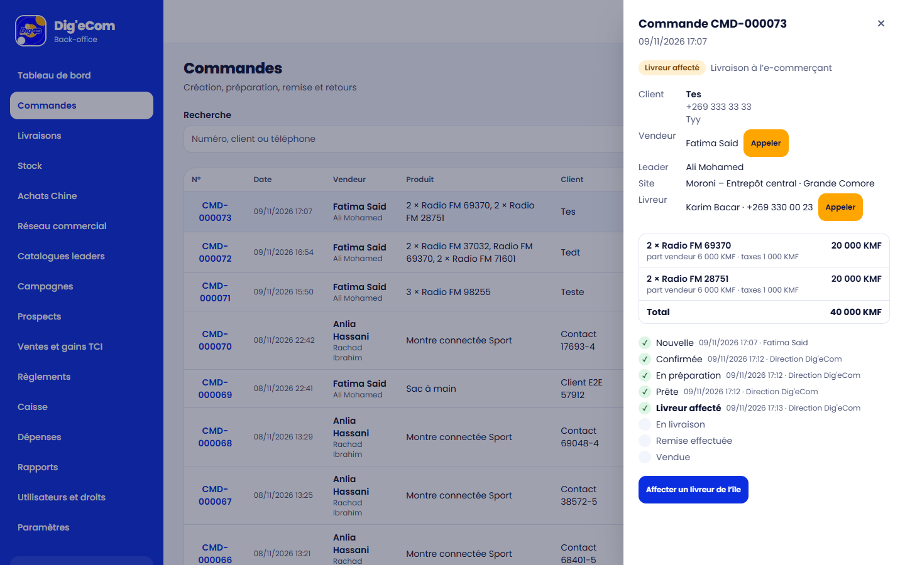
Panneau de détail : frise des étapes, personnes, montants et actions possibles.
Clique sur le numéro d’une commande pour ouvrir son panneau :
Frise des étapes, avec la date et l’auteur de chaque changement.
Client, vendeur, leader, site, livreur (avec un bouton Appeler par Internet quand c’est possible).
Produits et montants figés (prix, part vendeur, taxes, prime TCI).
Boutons d’action calculés selon le statut et tes droits : confirmer, préparer, prête, affecter, changer de mode, annuler, marquer vendue/refusée, remettre en stock, déclarer endommagé…
Retour après vente (administrateur uniquement)Une commande déjà « Vendue » peut être reprise avec un motif obligatoire. Le stock revient et des écritures inverses annulent commission, taxes et chiffre d’affaires : rien n’est supprimé.
6Livraisons
Le suivi des courses par île, en temps réel.
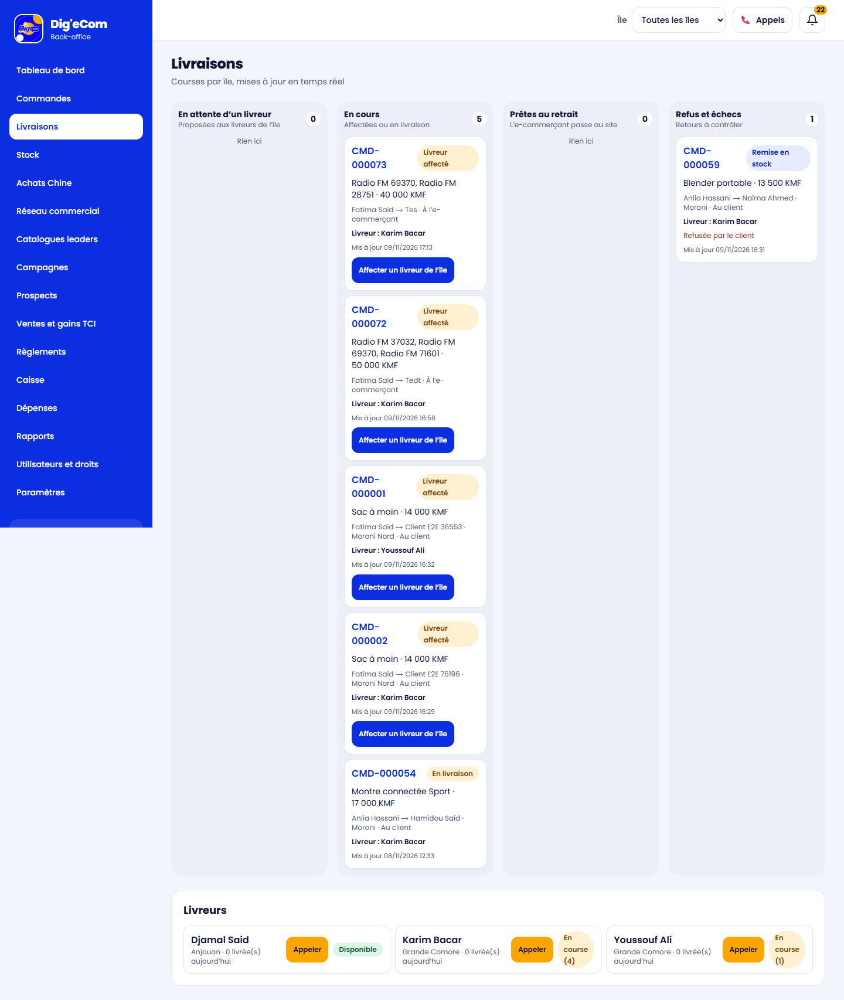
Tableau des livraisons et liste des livreurs.
Les colonnes
En attente d’un livreur : commandes prêtes, proposées aux livreurs disponibles de l’île. Le premier qui accepte la prend.
En cours : livreur affecté ou en livraison.
Prêtes au retrait : l’e-commerçant passe au site chercher le produit.
Refus et échecs : retours à contrôler, avec le motif (refus du client, échec de livraison) puis remise en stock ou casse.
Affecter un livreur à la main
Sur une carte, clique Affecter un livreur de l’île.
Choisis un livreur : seuls ceux de l’île de la commande sont proposés.
Le livreur est notifié, la course apparaît dans son application.
La liste des livreurs
Pour chaque livreur : île, livraisons du jour et état (Disponible, En course, Indisponible). Le bouton Appeler lance un appel Dig’eCom.
Alerte « sans livreur »Si aucune course n’est acceptée après le délai réglé dans les paramètres (10 minutes par défaut), l’assistant logistique de l’île est alerté.
7Stock
Le stock par site : disponible, réservé, coût rendu et alertes.
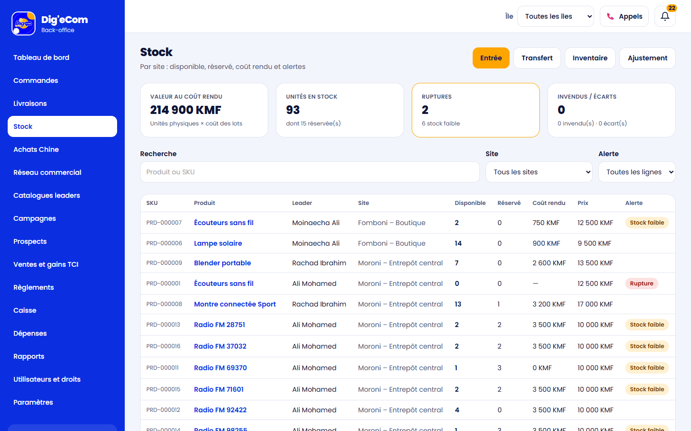
Vue du stock avec indicateurs et alertes.
Lire l’écran
Valeur au coût rendu : unités physiques × coût réel des lots (achat + transport + douane + frais).
Unités en stock, dont réservées par des commandes en cours.
Ruptures et stock faible (seuil des paramètres ou du produit), invendus et écarts d’inventaire.
Filtres par recherche, site et type d’alerte.
Les quatre mouvements
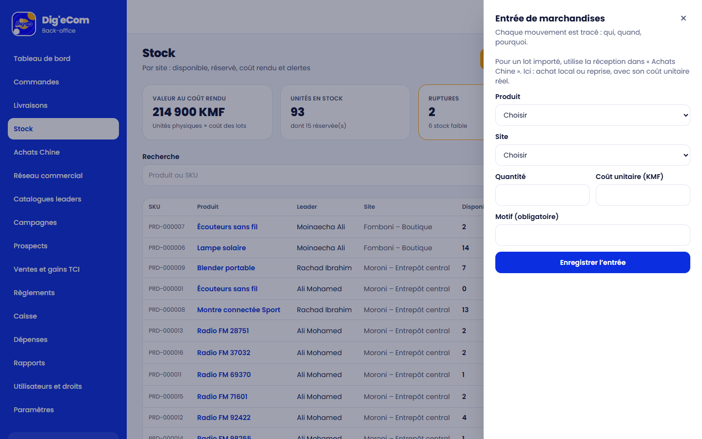
Entrée de marchandises.
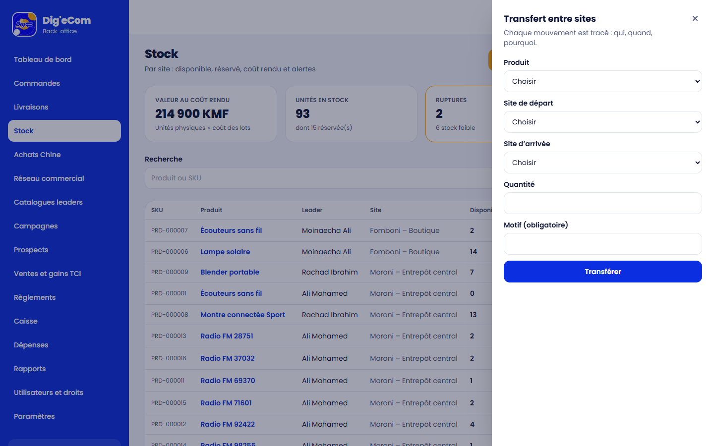
Transfert entre sites.
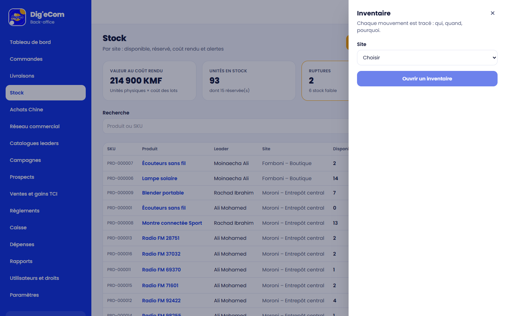
Inventaire.Ajustement, casse ou perte.
Action
Usage
Entrée
Achat local ou reprise, avec son coût unitaire réel. Pour un lot importé, utilise plutôt la réception dans « Achats Chine ».
Transfert
Déplacer des unités d’un site à un autre (y compris entre îles).
Inventaire
Ouvrir un inventaire d’un site, saisir les quantités comptées : les écarts sont calculés et tracés.
Ajustement
Correction (+ ou −), casse ou perte.
Chaque mouvement est tracéLe motif est obligatoire ; l’historique indique qui, quand et pourquoi. Le stock ne passe jamais sous zéro.
8Achats Chine
Commandes fournisseurs, lots et coût d’approvisionnement réel.
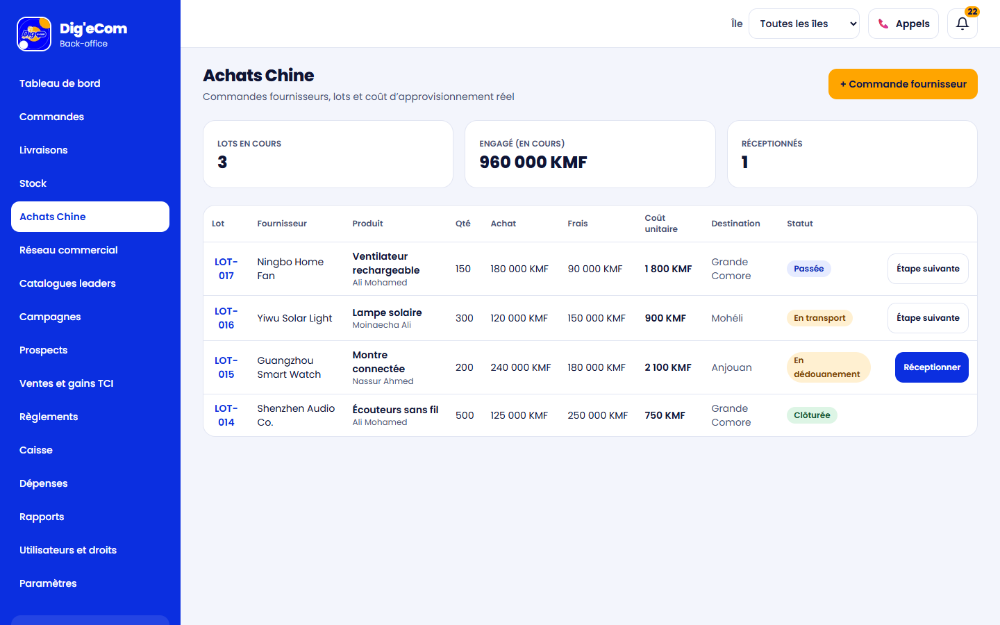
Liste des lots et indicateurs d’achat.
Créer une commande fournisseur
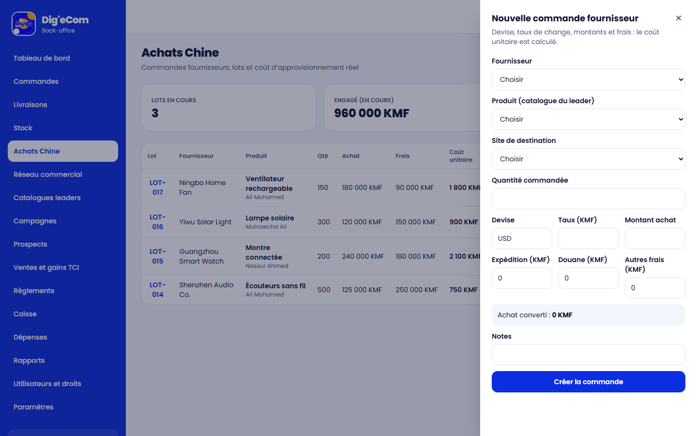
Nouvelle commande fournisseur : devise, taux, montants et frais.
+ Commande fournisseur : fournisseur, produit (catalogue d’un leader), site de destination.
Quantité, prix d’achat (avec devise et taux de change), frais d’expédition, douane et autres frais.
Le coût unitaire est calculé automatiquement : (achat + frais) ÷ quantité.
Suivre un lot
En préparation→Passée→En transport→Arrivée aux Comores→En dédouanement→Réceptionnée→Clôturée
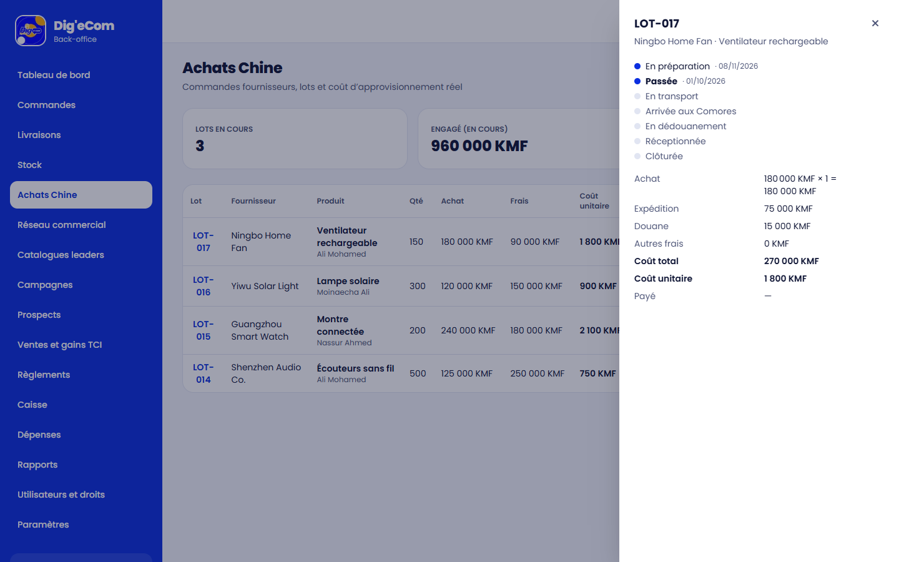
Détail d’un lot : étapes, achat, frais, coût total et unitaire.
Clique sur le numéro du lot (LOT-…) pour voir son détail, ou sur Étape suivante pour le faire avancer.
Réceptionner un lot
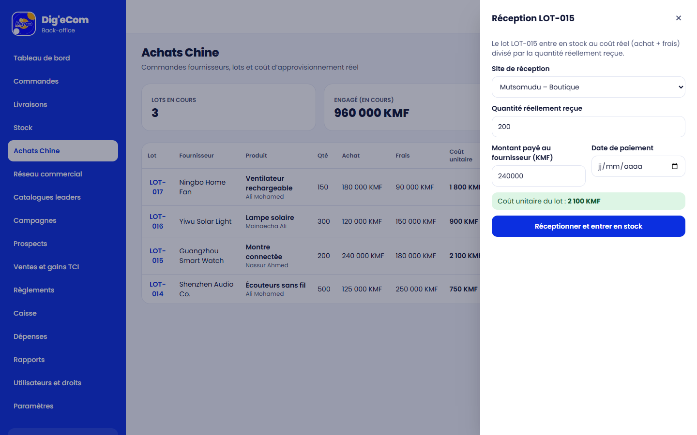
Réception : quantité réellement reçue et paiement du fournisseur.
À l’étape « En dédouanement », Réceptionner fait entrer le lot en stock au coût réel divisé par la quantité réellement reçue. Ce coût est utilisé, lot par lot (premier entré, premier sorti), pour calculer la marge de chaque vente.
Coût d’approvisionnementIl est rattaché au lot et n’est jamais compté deux fois ni enregistré comme une dépense à chaque vente.
9Réseau commercial
Leaders, équipes, quantités attribuées et objectifs, sur le cycle en cours.
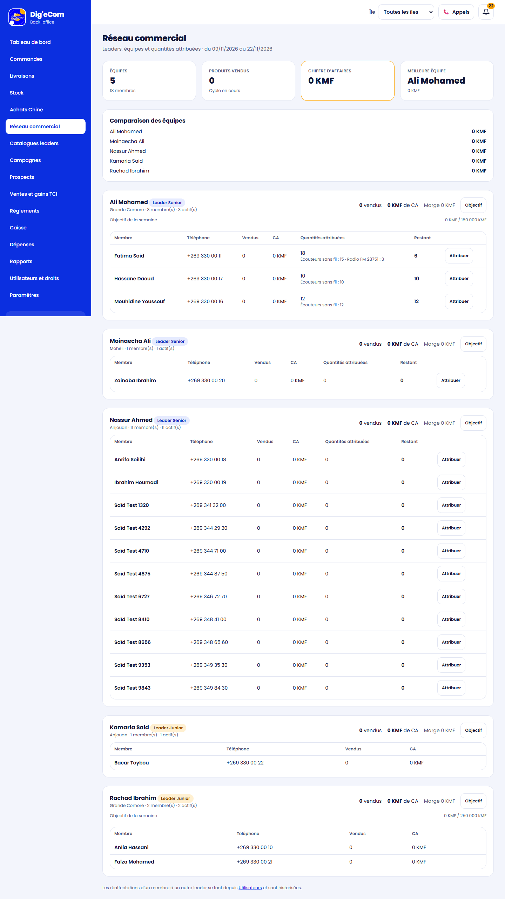
Vue du réseau : équipes, comparaison, membres.
Indicateurs : nombre d’équipes et de membres, produits vendus, chiffre d’affaires, meilleure équipe.
Comparaison des équipes par chiffre d’affaires.
Par équipe : marge, objectif de la semaine et sa progression, puis chaque membre avec ses ventes, son CA, les quantités attribuées et le restant.
Attribuer : répartir des quantités de produits entre les membres d’une équipe (Leader Senior).
Objectif hebdomadaire : une notification part une seule fois par semaine quand il est atteint.
10Catalogues leaders
Les produits publiés par chaque leader, cloisonnés par équipe.
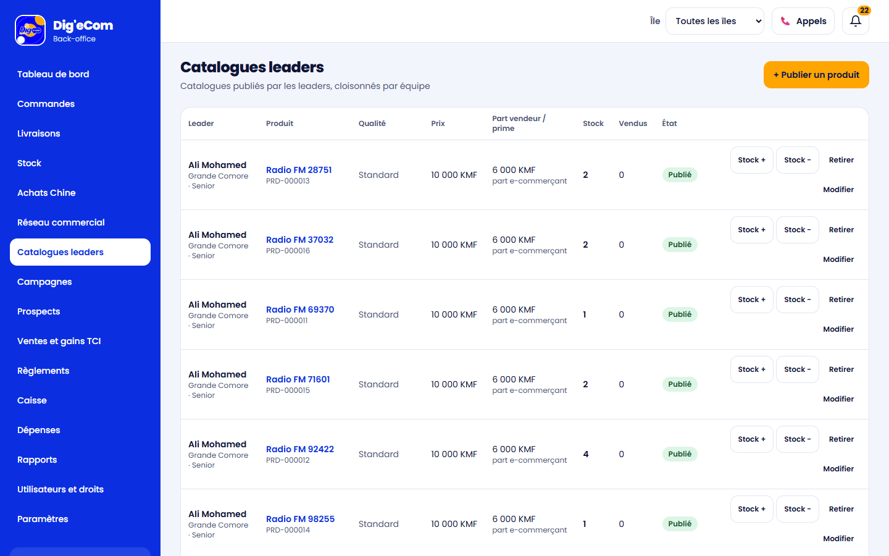
Catalogues de tous les leaders.
Publier ou modifier un produit
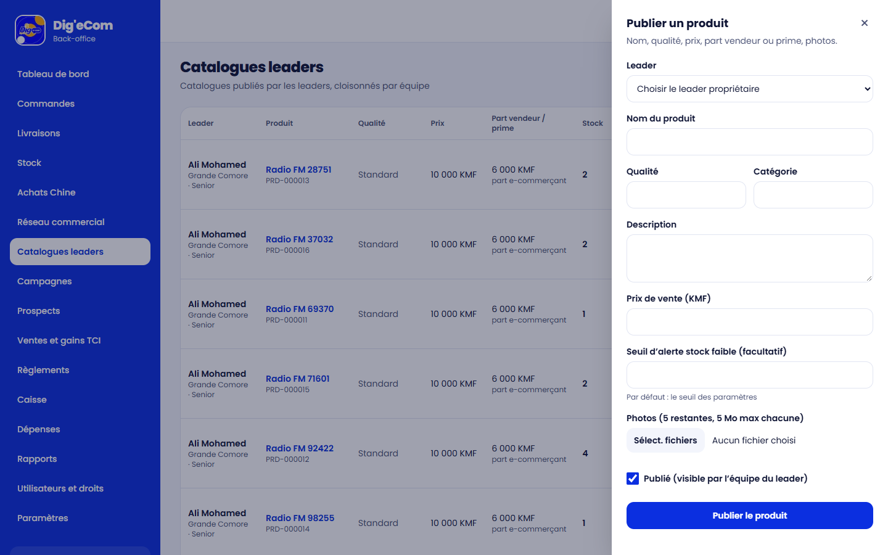
Publier un produit.
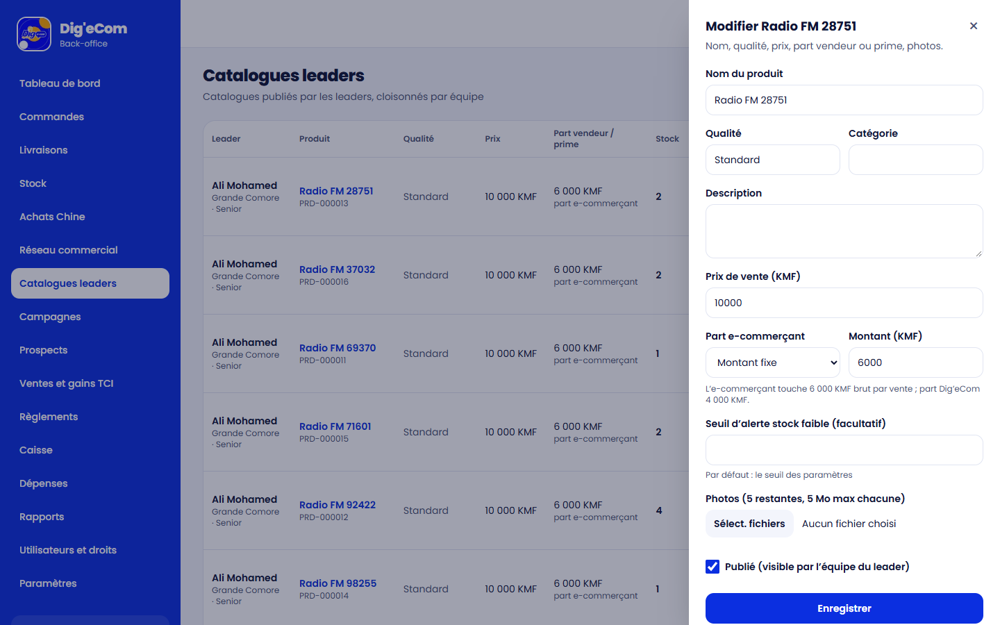
Modifier un produit.
Leader propriétaire, nom, qualité, catégorie, description, prix de vente, photos (5 au maximum, 5 Mo chacune, compressées automatiquement).
Part vendeur (Leader Senior : montant ou pourcentage revenant à l’e-commerçant) ou prime TCI (Leader Junior : montant fixe entre les bornes des paramètres).
Seuil de stock faible propre au produit (sinon celui des paramètres).
Actions par ligne : Stock +, Stock −, Retirer (dépublier), Modifier.
CloisonnementUn e-commerçant ou un TCI ne voit que les produits publiés par son leader, avec du stock sur son île. Un produit en rupture ne peut pas être vendu.
11Campagnes
Les publicités des Leaders Junior : budget, contacts reçus, confirmations, ventes et coût par vente.
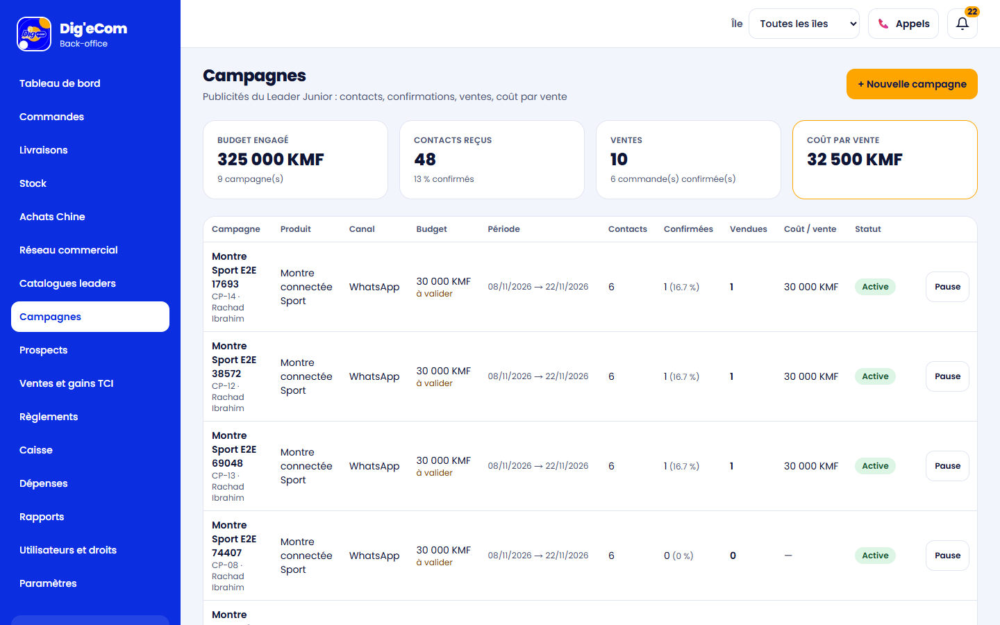
Liste des campagnes et indicateurs.
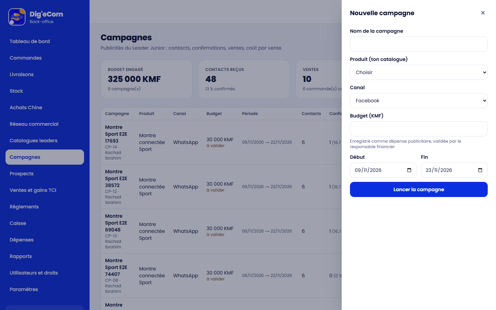
Nouvelle campagne.
Lancer une campagne
+ Nouvelle campagne : nom, produit du catalogue, canal (Facebook, TikTok, WhatsApp, Instagram, autre).
Budget, dates de début et de fin.
Le budget est enregistré comme dépense publicitaire, à valider par le responsable financier.
Chaque campagne peut être mise en Pause puis reprise.
Indicateurs
Budget engagé, contacts reçus, taux de confirmation, ventes et coût par vente (budget ÷ ventes).
12Prospects
Les contacts issus des campagnes et leur répartition entre les téléconseillers.
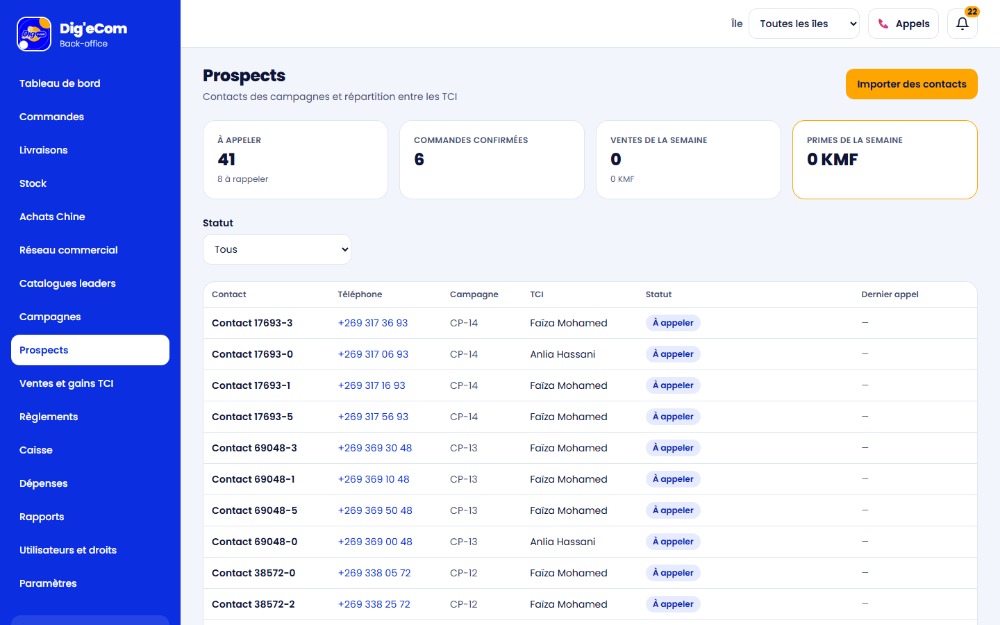
Liste des prospects et suivi des appels.
Importer des contacts
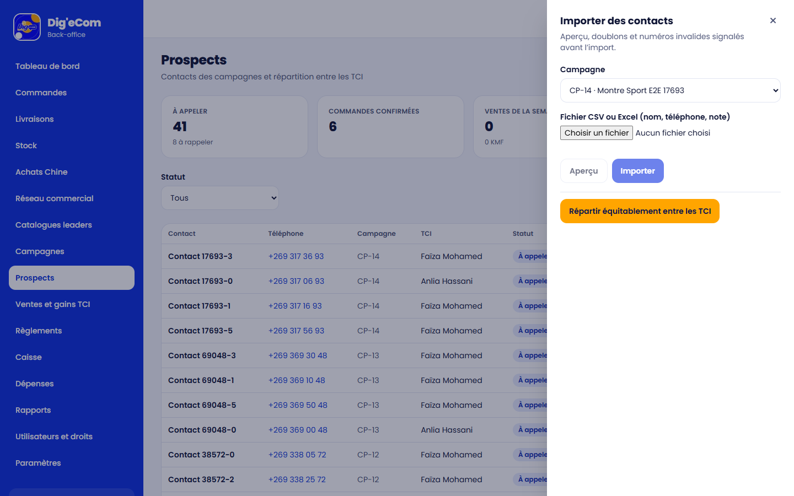
Import CSV ou Excel avec aperçu.
Importer des contacts : choisis la campagne et un fichier CSV ou Excel (nom, téléphone, note).
Aperçu : doublons et numéros invalides sont signalés avant l’import.
Coche Répartir équitablement entre les TCI pour distribuer les contacts à l’équipe.
Statuts d’un prospect
À appeler · Injoignable – à rappeler · Commande confirmée · Pas intéressé. Les indicateurs montrent les contacts à appeler, les commandes confirmées, les ventes et les primes de la semaine.
13Ventes et gains TCI
Les gains des téléconseillers, calculés automatiquement à partir des ventes clôturées « Vendue ».
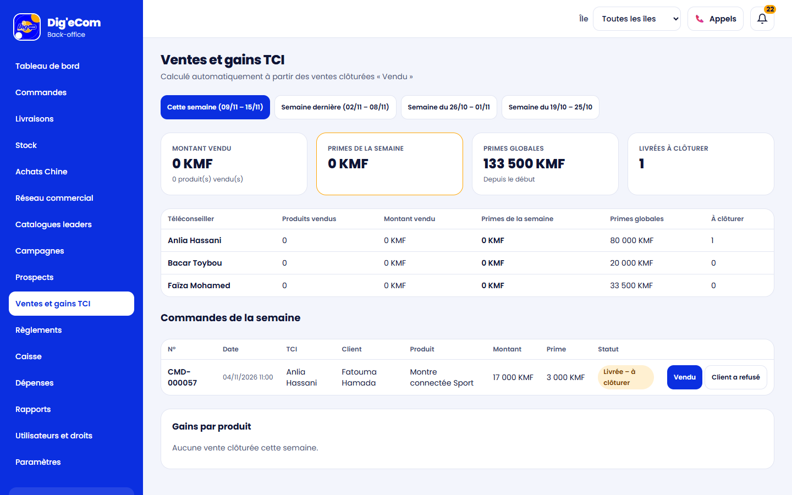
Ventes et primes des TCI par semaine.
Choisis la semaine (lundi → dimanche) : montant vendu, primes de la semaine, primes globales depuis le début, commandes livrées à clôturer.
Tableau par téléconseiller, puis les commandes de la semaine.
Pour une commande livrée : Vendu (la prime est acquise) ou Client a refusé (aucune prime).
Prime figéeLa prime est copiée sur la commande à sa création : la modifier ensuite dans le catalogue ne change pas les ventes passées.
14Règlements
Les relevés des e-commerçants, générés automatiquement tous les 14 jours, puis vérifiés, validés et payés.
Détail d’un relevé : ventes, taxes, abonnement, net à payer.
Un relevé reprend les commissions des ventes du cycle, moins la taxe e-commerçant, l’abonnement et les autres retenues, plus un éventuel report négatif du cycle précédent.
Seul le bouton de l’étape correspondant à ton rôle est actif ; sinon un message indique qui doit agir.
Le paiement demande le moyen (espèces, Huri Money, MVola, virement) et une référence ou une preuve. Chaque relevé s’exporte en PDF.
Séparation des tâchesMême l’administrateur ne peut pas vérifier puis valider le même relevé.
15Caisse
Une caisse par site : ouverture avec fond, mouvements, clôture avec écart.
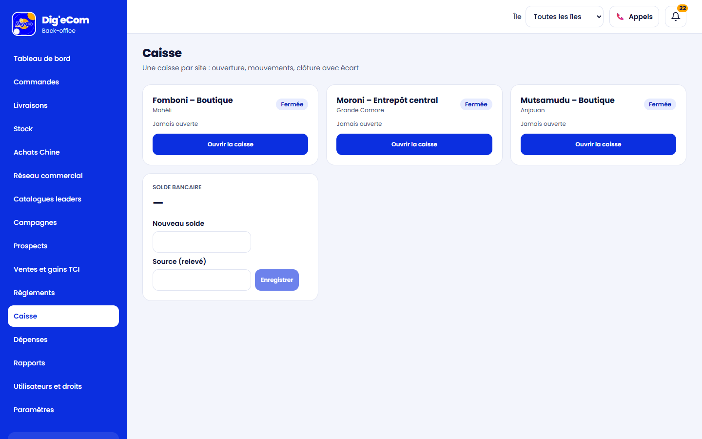
Les caisses des trois sites et le solde bancaire.
Ouvrir la caisse avec le fond de caisse compté.
Enregistrer les encaissements : vente au comptoir, remise d’un livreur (en choisissant les commandes concernées), abonnement payé en espèces.
Enregistrer les décaissements : paiement d’un règlement, dépense validée.
Clôturer en saisissant le montant compté : l’écart est calculé et une alerte part s’il n’est pas nul.
Solde bancaire : saisis le nouveau solde et sa source (relevé de banque) ; l’historique est conservé.
Les indicateurs donnent la marge après coût et taxes, les charges validées (dont frais de course), le résultat net et ce qui attend une validation.
Une dépense validée ne se modifie plusOn l’annule par une écriture inverse justifiée, puis on saisit la bonne.
17Rapports
Tous les rapports de la plateforme, à l’écran, en Excel et en PDF.
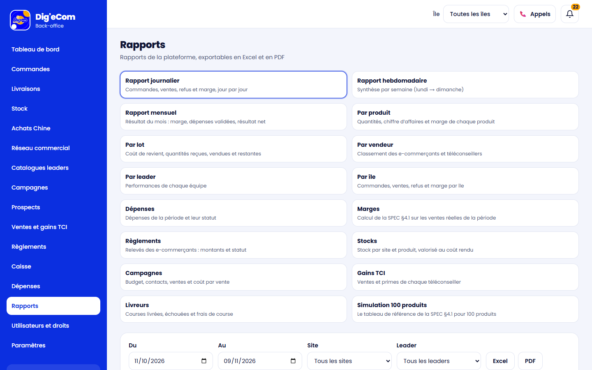
Choix du rapport, période, filtres et exports.
Rapport
Contenu
Journalier, hebdomadaire, mensuel
Commandes, ventes, refus et marge ; résultat du mois avec les dépenses validées.
Par produit, par lot
Quantités, CA, marge ; coût de revient, reçus, vendus, restants.
Par vendeur, par leader, par île
Classements et performances des équipes et des îles.
Dépenses, marges, règlements, stocks
Détail financier et stock valorisé au coût rendu.
Campagnes, gains TCI, livreurs
Coût par vente, primes, courses et frais.
Simulation 100 produits
Le tableau de référence de la spécification, sur les paramètres actuels.
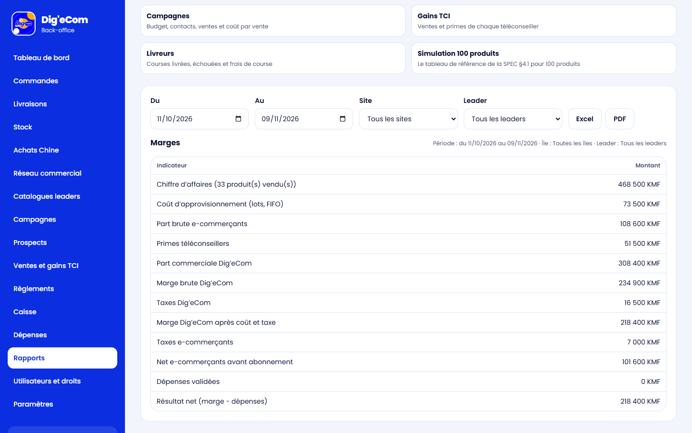
Rapport des marges : filtres, exports Excel et PDF, puis le calcul complet (CA, coût FIFO, parts, primes, taxes, résultat net).
Filtres : période (du/au), île, site, leader.
Excel : en-têtes en gras, montants formatés, formules de total et un onglet « Paramètres du rapport ».
PDF : en-tête avec logo, tableau, totaux, pagination.
Au-delà de 5 000 lignes, l’export est préparé en arrière-plan : un lien arrive dans les notifications (« Export prêt »).
18Utilisateurs et droits
Comptes, rôles, équipes, matrice des droits et journal d’activité.
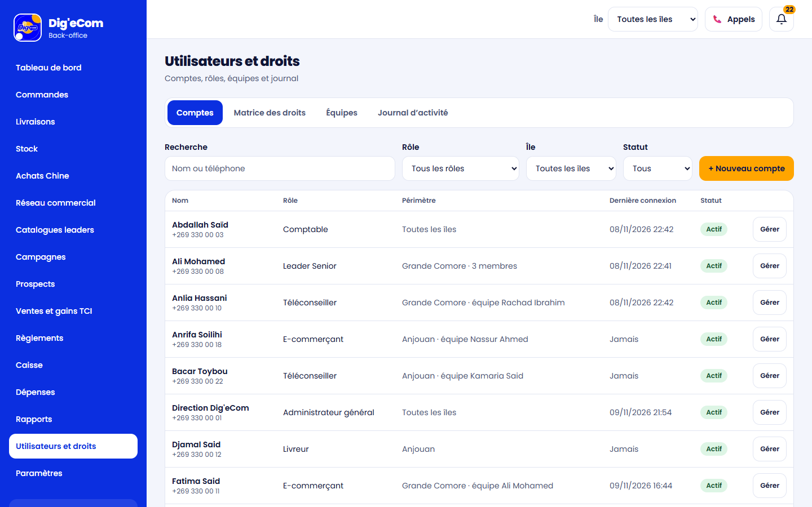
Onglet Comptes.
Créer un compte
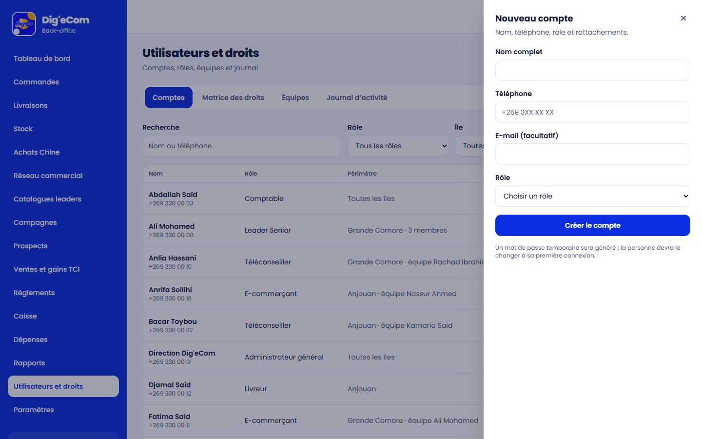
Nouveau compte.
Nouveau compte : nom complet, téléphone, e-mail facultatif, rôle.
Selon le rôle : île ou site de rattachement, leader pour un e-commerçant ou un TCI.
Un mot de passe temporaire est généré et affiché une seule fois : transmets-le, puis coche « J’ai noté le mot de passe ».
Gérer un compte
Gérer : modifier les informations, réinitialiser le mot de passe, désactiver (plutôt que supprimer : l’historique reste ; la personne est déconnectée de partout).
Réaffecter un e-commerçant ou un TCI à un autre leader : motif obligatoire, historique des équipes conservé.
Filtres par recherche, rôle, île ; date de dernière connexion et état actif.
Matrice des droits
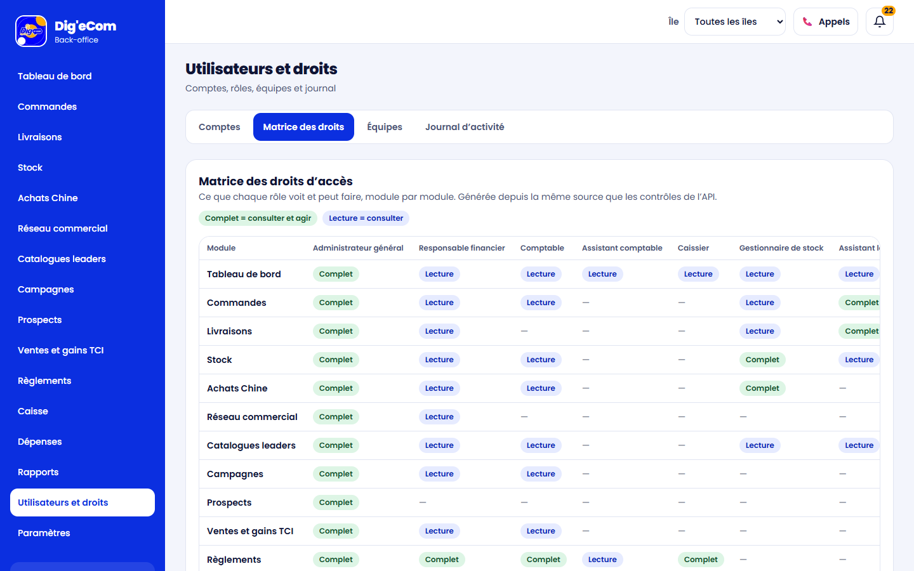
Ce que chaque rôle voit (Lecture) et peut faire (Complet), module par module.
La matrice est générée depuis la même source que les contrôles du serveur : ce qu’elle affiche est exactement ce qui est appliqué.
Équipes et journal d’activité
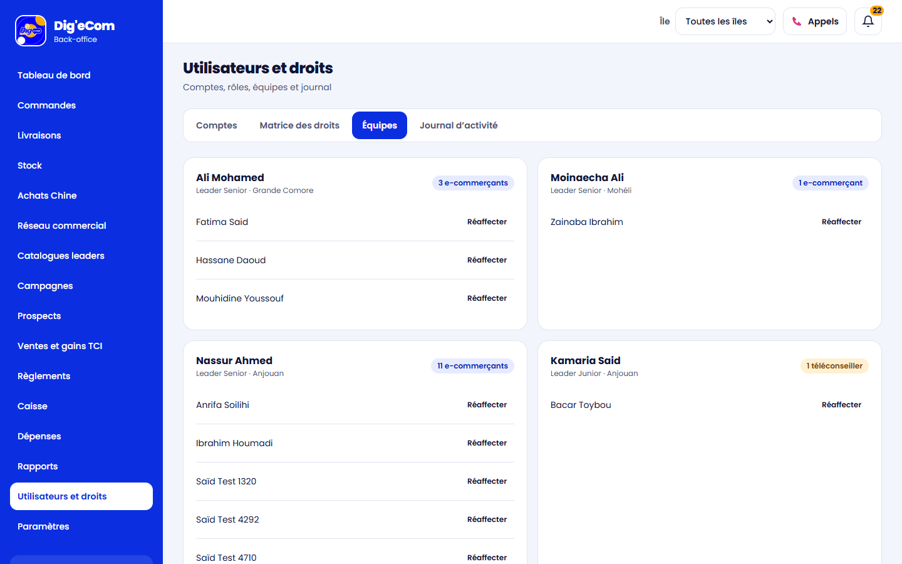
Équipes des leaders.
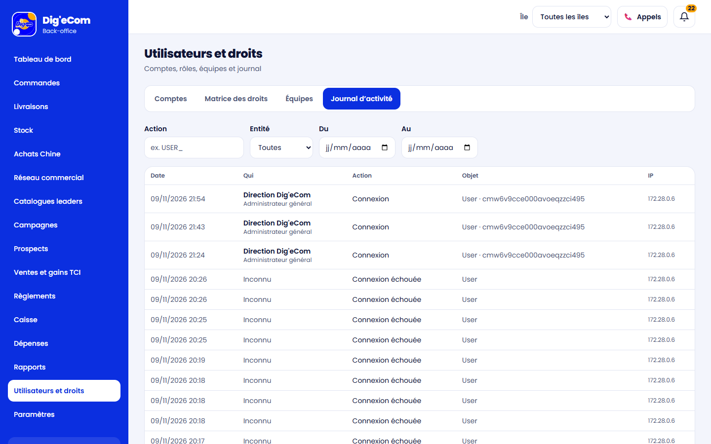
Journal d’activité.
Le journal enregistre chaque action sensible (connexions réussies ou échouées, prix, parts, primes, validations, paiements, réaffectations, exports) avec l’auteur, la date, l’objet, l’adresse IP et les valeurs avant et après. Il est filtrable par action, entité et période, et ne peut être ni modifié ni effacé.
19Paramètres
Les règles de calcul et de fonctionnement. Chaque changement a une date d’effet : les ventes passées ne sont jamais recalculées.
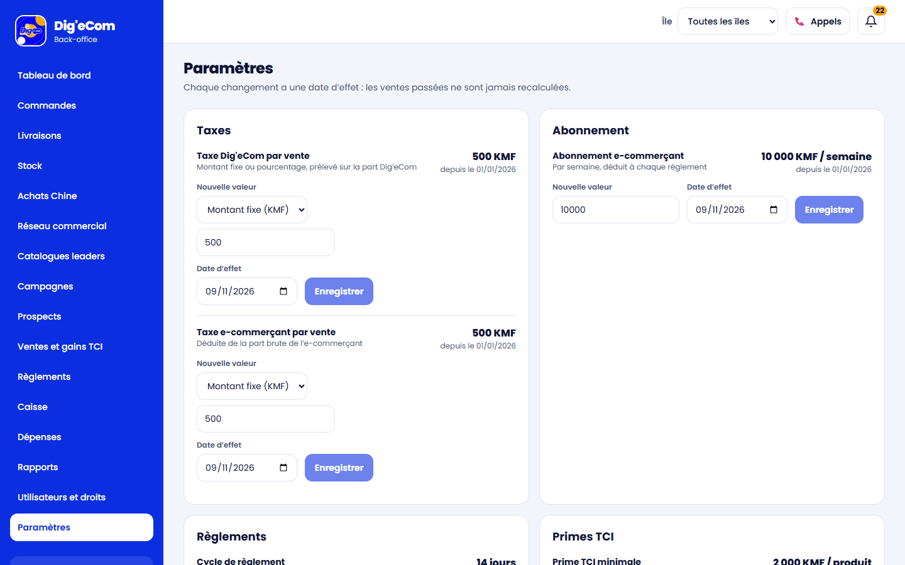
Paramètres : valeur actuelle, date d’effet, nouvelle valeur.
Groupe
Paramètres
Valeur de démonstration
Taxes
Taxe Dig’eCom par vente (montant fixe ou %) ; taxe e-commerçant par vente
500 KMF ; 500 KMF
Abonnement
Abonnement e-commerçant, déduit à chaque règlement
10 000 KMF / semaine
Règlements
Durée du cycle ; date d’ancrage (un lundi) ; moyens de paiement acceptés
14 jours ; 05/01/2026 ; espèces, Huri Money, MVola, virement
Primes TCI
Bornes minimale et maximale de la prime fixée par le Leader Junior
2 000 et 3 500 KMF / produit
Livraisons
Délai avant alerte « sans livreur » ; frais par course livrée
10 minutes ; 1 000 KMF
Stock
Seuil de stock faible par défaut
selon le paramétrage
Saisis la nouvelle valeur (et son type : montant fixe ou pourcentage pour les taxes).
Choisis la date d’effet.
Enregistrer : la modification est journalisée ; elle s’applique aux commandes créées à partir de cette date.
20Préférences de notification
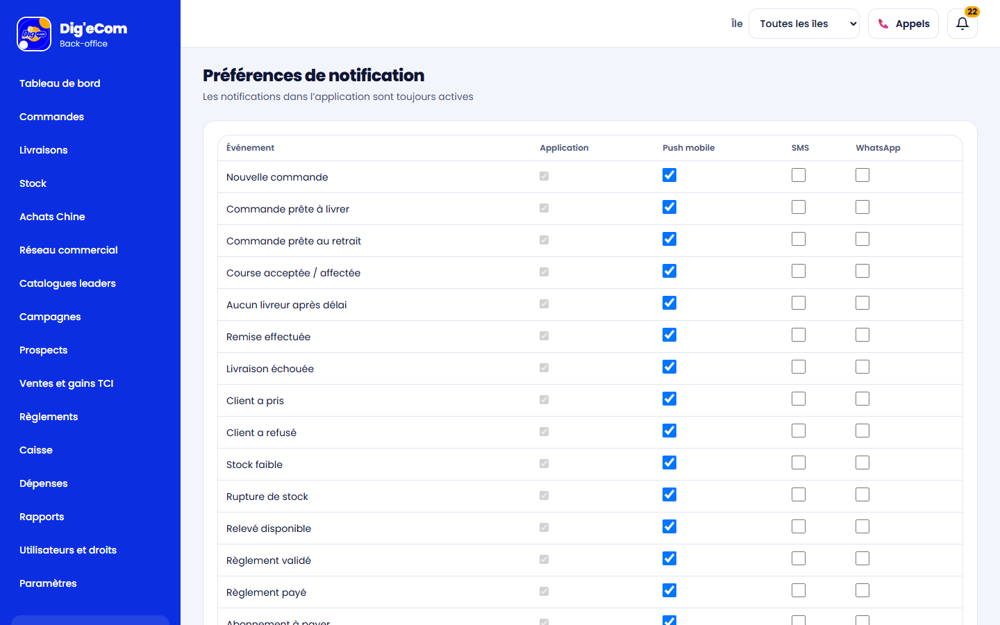
Choix des canaux par type d’événement.
Pour chaque événement (nouvelle commande, prête à livrer, course acceptée, aucun livreur, remise, échec, client a pris ou refusé, stock faible, rupture, relevé disponible, règlement validé ou payé, abonnement, prospect attribué, vente clôturée, objectif atteint, dépense à valider, export prêt), choisis les canaux :
Application : toujours active.
Push mobile : sur l’application Android.
SMS et WhatsApp : prévus pour plus tard.
Les choix sont enregistrés immédiatement.
21Appels Dig’eCom
Des appels audio par Internet, sans crédit téléphonique, numéro masqué, chiffrés et jamais enregistrés.
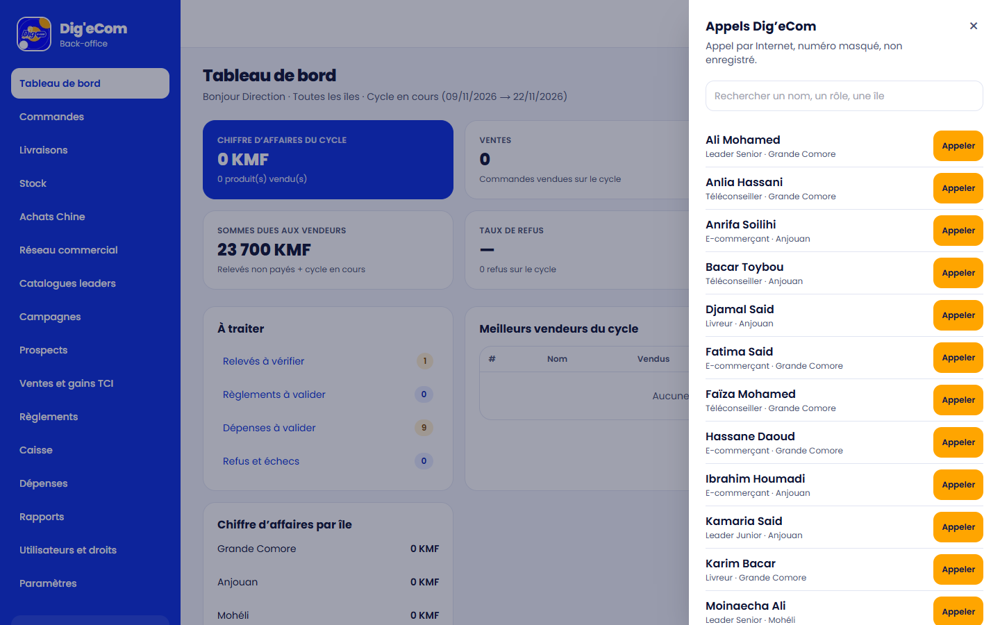
L’annuaire d’appel ouvert depuis l’en-tête.
Qui peut appeler qui
Qui
Peut appeler (et être appelé par)
Administrateur
Tout utilisateur actif
Assistant logistique
Livreurs et e-commerçants de son île
Leader Senior
Ses e-commerçants
Leader Junior
Ses téléconseillers
E-commerçant ↔ livreur
Depuis une commande, dès qu’un livreur l’a prise (application mobile)
Passer un appel
Clique 📞 Appels, cherche un contact (nom, rôle, île), puis Appeler. Ou bien, dans le détail d’une commande ou la liste des livreurs, clique Appeler.
À la première utilisation, autorise le micro dans le navigateur.
Un bandeau en bas à droite indique « Ça sonne… », puis le chrono une fois décroché. Tu peux couper le micro ou raccrocher.
Recevoir un appel
Le bandeau affiche « Appel Dig’eCom entrant » avec une sonnerie : Décrocher ou Refuser. La page du back-office doit être ouverte. Sans réponse en 45 secondes, l’appel passe en manqué et une notification l’indique. L’annuaire liste aussi les derniers appels avec leur durée.
22Simulateur (environnement de test)
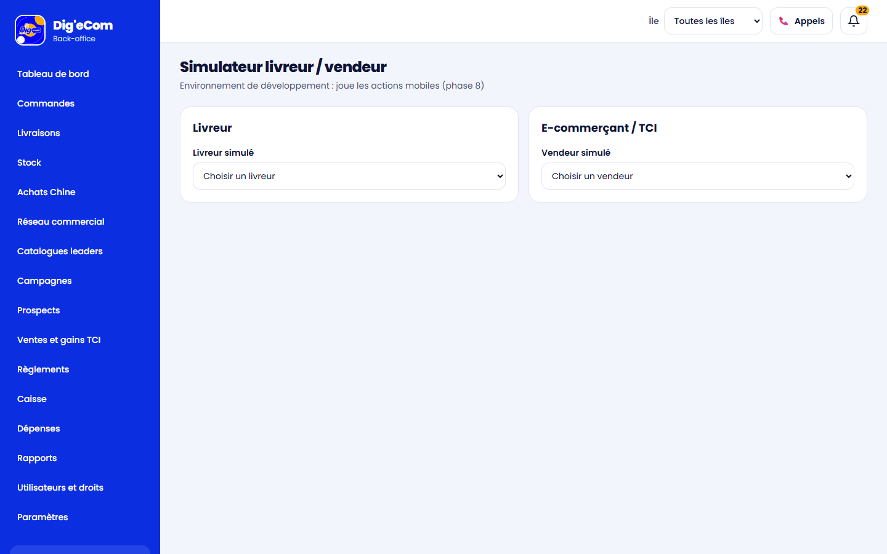
Simulateur livreur / vendeur.
Disponible uniquement en environnement de développement ou de test, jamais en production. Il permet à l’administrateur de jouer les actions de l’application mobile au nom d’un livreur ou d’un vendeur (accepter une course, confirmer une remise, déclarer « client a pris »…), pour former les équipes ou vérifier un circuit. Chaque action faite « au nom de » est journalisée.
L’e-commerçant enregistre la vente sur son téléphone (ou la logistique la crée « pour le compte de »). Le stock est réservé.
La logistique de l’île confirme, prépare, puis déclare la commande prête.
La course est proposée aux livreurs disponibles de l’île ; le premier qui accepte la prend.
Le livreur retire le produit au site, puis le remet à l’e-commerçant.
L’e-commerçant confirme la réception, remet le produit au client et déclare « le client a pris ».
La vente passe « Vendue » : commission, taxes, marge et frais de course sont enregistrés.
Un refus ou un échec
Refusée par le client (avec motif) ou livraison échouée : aucune commission ; les propriétaires sont notifiés.
Le produit revient au site (Retour à contrôler), puis Remise en stock ou Endommagée.
Un lot importé de Chine
Commande fournisseur→Transport→Dédouanement→Réception (coût réel)→Stock vendable→Coût FIFO sur chaque vente
Le règlement d’un e-commerçant
Ventes « Vendue » du cycle→Relevé généré (14 jours)→Vérifié→Validé→Payé à la caisse
Une campagne de Leader Junior
Campagne + budget→Dépense validée→Import des contacts→Répartition aux TCI→Appels→Commandes→Vendu = prime TCI
24Règles de gestion à connaître
Règle
Conséquence pratique
Montants en KMF entiers
Aucun centime ; les pourcentages sont arrondis à l’unité, produit par produit.
Écritures immuables
Corriger = écriture inverse liée et justifiée. Le journal et le grand livre refusent toute modification, même en base de données.
Instantanés sur la commande
Un changement de prix, de part, de prime ou de taxe n’affecte que les nouvelles commandes.
Commission à la vente
Seulement au statut « Vendue » ; jamais en cas de refus, d’échec ou d’annulation.
Cloisonnement par île
Une course n’est proposée qu’aux livreurs de l’île du site ; les rôles d’île ne voient que leur île.
Cloisonnement par leader
Un vendeur ne voit que le catalogue et le stock de son leader ; un leader ne voit que son équipe.
Séparation des tâches
La même personne ne vérifie pas et ne valide pas le même relevé.
Traçabilité
Chaque action sensible est journalisée avec l’avant et l’après.
25Questions fréquentes et dépannage
Un utilisateur n’arrive plus à se connecter
Après 5 essais manqués, le compte est verrouillé 15 minutes. Sinon, réinitialise son mot de passe depuis Utilisateurs → Gérer : il recevra un mot de passe temporaire à changer.
Une commande reste « Prête » sans livreur
Vérifie dans Livraisons qu’au moins un livreur de l’île est « Disponible ». Sinon, affecte un livreur à la main. L’alerte « sans livreur » part après le délai paramétré.
Un vendeur ne voit pas un produit
Le produit doit être publié par son leader et avoir du stock sur son île. Vérifie le catalogue et le stock du site.
Un chiffre du tableau de bord semble ancien
Les indicateurs sont recalculés au plus tard après 60 secondes ; recharge la page.
Un export n’arrive pas
Au-delà de 5 000 lignes, l’export est préparé en arrière-plan ; le lien arrive dans les notifications et reste valable une heure après le clic.
Le micro est refusé pendant un appel
Autorise le micro pour le site dans le navigateur (icône à gauche de l’adresse), puis rappelle.
Je me suis trompé dans une dépense ou une vente
Rien ne se supprime : annule par une écriture inverse justifiée (dépense) ou par un retour après vente (commande vendue), puis saisis la bonne opération.
26Glossaire
Terme
Définition
KMF
Franc comorien.
Cycle de règlement
Période (14 jours par défaut) à la fin de laquelle un relevé est généré pour chaque e-commerçant.
Relevé
Décompte d’un e-commerçant sur un cycle : commissions, taxes, abonnement, net à payer.
Part vendeur
Ce que touche l’e-commerçant sur un produit vendu (montant ou pourcentage fixé par le Leader Senior).
Prime TCI
Montant fixe par produit vendu, versé au téléconseiller (fixé par le Leader Junior).
Lot
Une commande fournisseur reçue : elle porte le coût réel d’approvisionnement.
Coût rendu
Coût d’un produit arrivé aux Comores : achat + transport + douane + frais, divisé par la quantité reçue.
FIFO
« Premier entré, premier sorti » : une vente consomme d’abord le lot le plus ancien.
Marge après coût et taxe
Part Dig’eCom − coût rendu − taxe Dig’eCom.
Instantané
Copie des prix, parts, primes, taxes et coûts sur la commande au moment de sa création.
Écriture inverse
Écriture de correction qui annule une écriture erronée, avec justification.
TCI
Téléconseiller.
TURN
Serveur relais qui permet les appels Dig’eCom sur les réseaux mobiles.